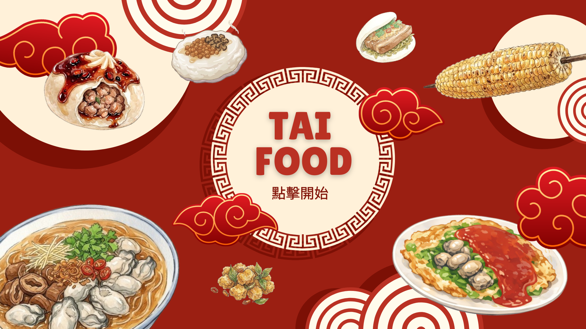

BRAND STORY
一杯手搖珍珠奶茶，
就是台灣寫給世界的情書。
核心視覺：我們以台灣最具代表性的「手搖珍珠奶茶」作為 LOGO 主視覺。
設計說明：中心直線條代表吸管，並透過底部錯落分布的小圓點生動呈現「珍珠」這一視覺焦點。外圍則結合叉子的造型，象徵飲食文化——傳統與當代、東方與全球，在一杯飲料裡完成對話。
- 傳承·三代職人手感，從茶湯到糕點。
- 連結·把每一條巷子的香氣，傳到地圖上的另一端。
- 分享·讓世界看見台灣，從一口刈包開始。

🇹🇼 TAI FOOD｜Taiwan Street Food Guide 🧋
讓世界看見台灣的味道——從清晨豆漿到深夜麵線，一鍵找齊。
CATEGORY · 01
街頭巷尾的鹹香記憶，從蒸籠到鐵板，台灣人一天的能量來源。
CATEGORY · 02
糖份是另一個胃，從冰品到傳統糕點，每一口都是時光機。轉動圓桌，挑一道。
CATEGORY · 03
珍奶征服世界，但這座島嶼還有更多液態驚喜——從清晨豆漿到深夜青茶。
DAILY PICK
選擇困難？讓骰子幫你決定一道台灣美食。系統隨機推薦，且最近三天不重複，每天都新鮮。
已避開最近三天吃過的
FOOD PASSPORT
每吃過一道就蓋一個章，每章 +10 點。湊滿 33 道，蒐集你的台灣味成就。
BRAND STORY
核心視覺：我們以台灣最具代表性的「手搖珍珠奶茶」作為 LOGO 主視覺。
設計說明：中心直線條代表吸管，並透過底部錯落分布的小圓點生動呈現「珍珠」這一視覺焦點。外圍則結合叉子的造型，象徵飲食文化——傳統與當代、東方與全球，在一杯飲料裡完成對話。
留下你的 Email，每週收到一張我們親自走訪、攝氏 38 度蹲在攤前拍出來的台灣味地圖。